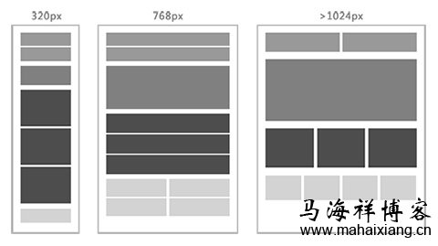
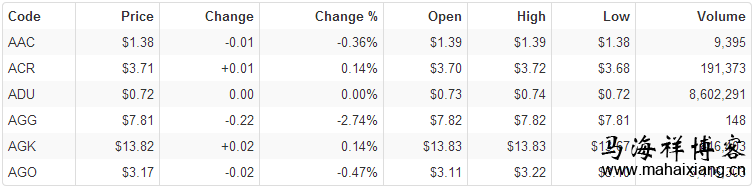
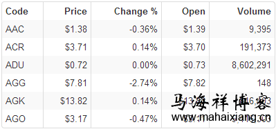
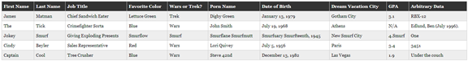
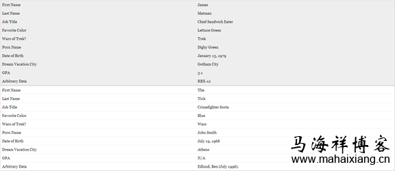
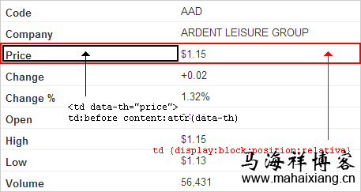
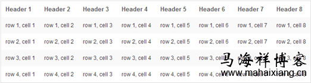
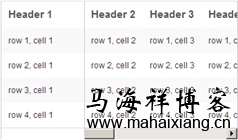
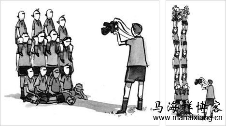
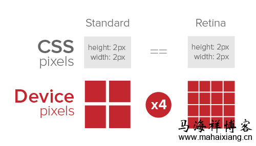

昨天我在马海祥博客上跟大家详细的介绍过《什么是响应式网页设计？》，我觉的响应式网页设计不仅仅是一种趋势，还更是一个新的设计解决方案！它有助于解决不同的分辨率和设备（台式电脑，笔记本电脑，平板，手机）相关的设计问题。既然是设计的问题，这里就会涉及到很多层面的角色，包括交互设计师，视觉设计师，前端工程师，后台开发工程师。
交互设计师，要满足各自不通分辨率和设备的页面布局展现方式。而视觉设计师，则要考虑到页面性能和移动端带宽问题，权衡下页面的酷炫效果和视觉色彩的运用。而前端和后台开发工程师，则要完成满足视觉需求和交互功能，更要考虑到页面加载性能和消耗带宽问题，更重要的是移动端安全性能方面！既然响应式网页设计牵涉到了这么多的方方面面，那我们又该如何去实现这种页面呢？对此我也特意收集了一些响应式网页的实现方法原理，在马海祥博客上跟大家分享一下：
首先我们应该遵循移动优先原则，交互和设计应以移动端为主，PC则作为移动端的一个扩展；一个页面需要兼容不同终端，那么有两个关键点是我们需要去做到响应式的：响应式布局和响应式内容（图片、多媒体）。
一、响应式布局
如我们需要兼容不同屏幕分辨率、清晰度以及屏幕定向方式竖屏(portrait)、横屏(landscape)，怎样才能做到让一种设计方案满足所有情况？对此，马海祥觉的我们的布局应该是一种弹性的栅格布局，不同尺寸下弹性适应，如以下页面中各模块在不同尺寸下的位置：

那么我们具体要怎么做呢？
1、Meta标签定义
使用 viewport meta 标签在手机浏览器上控制布局
<meta name="viewport" content="width=device-width,initial-scale=1,maximum-scale=1" />
通过快捷方式打开时全屏显示
<meta name="apple-mobile-web-app-capable" content="yes" />
隐藏状态栏
<meta name="apple-mobile-web-app-status-bar-style" content="blank" />
iPhone会将看起来像电话号码的数字添加电话连接，应当关闭
<meta name="format-detection" content="telephone=no" />
2、使用Media Queries适配对应样式
常用于布局的CSS Media Queries有以下几种：
设备类型(media type):
all所有设备；
screen 电脑显示器；
print打印用纸或打印预览视图；
handheld便携设备；
tv电视机类型的设备；
speech语意和音频盒成器；
braille盲人用点字法触觉回馈设备；
embossed盲文打印机；
projection各种投影设备；
tty使用固定密度字母栅格的媒介，比如电传打字机和终端。
设备特性(media feature):
width浏览器宽度；
height浏览器高度；
device-width设备屏幕分辨率的宽度值；
device-height设备屏幕分辨率的高度值；
orientation浏览器窗口的方向纵向还是横向，当窗口的高度值大于等于宽度时该特性值为portrait，否则为landscape；
aspect-ratio比例值，浏览器的纵横比；
device-aspect-ratio比例值，屏幕的纵横比。
例子：
/* for 240 px width screen */
@media only screen and (max-device-width:240px){
selector{ ... }
}
/* for 320px width screen */
@media only screen and (min-device-width:241px) and (max-device-width:320px){
selector{ ... }
}
/* for 480 px width screen */
@media only screen (min-device-width:321px)and (max-device-width:480px){
selector{ ... }
}
适用于布局的Media Queries，这里在马海祥博客上我们就不再做详述，有兴趣的话，可通过官方文档进一步了解。
3、表格(table)的响应式处理
那么对于表格(table)的响应式处理该是怎样的呢？我们该如何突破Table的局限性呢？接下来我们来了解以下的几种针对表格响应式处理的方法：
（1）、隐藏不重要数据列
处理前：

（点击查看大图）
处理后：

实现方法代码：
@media only screen and (max-width: 800px) {
table td:nth-child(2),
table th:nth-child(2) {display: none;}
}
@media only screen and (max-width: 640px) {
table td:nth-child(4),
table th:nth-child(4),
table td:nth-child(7),
table th:nth-child(7),
table td:nth-child(8),
th:nth-child(8){display: none;}
}
以用户角度思考，每个人对数据的认知不同，或许你隐藏的数据对于他却是很重要的，所以对于这种方法马海祥并不推荐。
（2）、多列横向变2列纵向
处理前：

处理后：

实现方法：<thead>定位隐藏，<td>变块元素，并绑定对应<th>列名，然后用伪元素的content:attr(data-th)实现<th>：

（3）、固定首列，剩余列横向滚动
处理前：

处理后：

实现原理代码：
thead {float:left;}
tbody {display:block;width:auto;overflow-x:auto;}
二、响应式内容
1、响应式图片
带宽是手机终端的硬伤，如果我们只是页面布局做了响应式处理，在我们用手机访问时，请求的图片还是PC上的大图；文件体积大，消耗流量多，请求延时长，因此导致的问题也是不可估量的。那么我们就得把图片也处理成响应式的根据终端类型尺寸分辨率来适配出合理的图形。

处理原理：浏览器获取用户终端的屏幕尺寸、分辨率逻辑处理后输出适应的图片，如屏幕分辨率320*480，那么我们匹配给它的是宽度应小于320px的图片。如果终端屏幕的DPI(device pixels)DPI详解值很高，也就是高清屏，那么我们就得输出2倍分辨率的图形(宽:640px)；以保证在高清屏下图形的清晰度。各种移动终端的屏幕参数可通过http://screensiz.es/phone查询。
解决方案：其实W3C已经有一个用于响应式图形的草案：新定义标签<picture>，因为它还只是草案，目前还没有支持的浏览器，期待在不久的未来我们能用上。虽然目前不支持，但我们还是来了解下，为之后的内容做个铺垫。
<picture>是一个图形element，内容由多个源图组成，并由CSS Media Queries来适配出合理图形，代码规范如下：
<picture width="500" height="500">
<source media="(min-width: 640px)" srcset="large-1.jpg 1x, large-2.jpg 2x">
<source media="(min-width: 320px)" srcset="med-1.jpg 1x, med-2.jpg 2x">
<source srcset="small-1.jpg 1x, small-2.jpg 2x">
<img src="small-1.jpg" alt="">
<p>Accessible text</p>
<!-- Fallback content-->
<noscript>
<img src="external/imgs/small.jpg" alt="Team photo">
</noscript>
</picture>
注：source: 一个图片源；
media: 媒体查询，用于适配屏幕尺寸；
srcset: 图片链接，1x适应普通屏，2x适应高清屏；
<noscript/>: 当浏览器不支持脚本时的一个替代方案；
<img/>: 初始图片；另外还有一个无障碍文本，类似<img/>的alt属性。
虽然<picture>目前还不支持，但它的原理我们是可借鉴的，所以就诞生了一个用于图片响应式处理的类库Picturefill
<span data-picture data-alt="图片描述文本">
<span data-src="small.jpg"></span>
<span data-src="medium.jpg" data-media="(min-width: 400px)"></span>
<span data-src="large.jpg" data-media="(min-width: 800px)"></span>
<span data-src="extralarge.jpg" data-media="(min-width: 1000px)"></span>
<!-- 浏览器不支持JS时的备用方案. -->
<noscript>
<img src="external/imgs/small.jpg" alt="图片描述文本">
</noscript>
</span>
其原理就是JS获取Source的源以及CSS Media Queries规则，输出适应图片，逻辑细节这里不再解析，感兴趣的可查看其JS代码，逻辑不是很复杂，也可以自己封装一个类库，以适用于自身产品，例如图片加载失败的替代方案。
当然，在未来的CSS Image Level 4中已经实现了响应式图片的原生语法：image-set
<image-set> = image-set([ <image-set-decl>, ]* [ <image-set-decl> | <color>])
<image-set-decl> = [ <image> | <string> ] <resolution>
那么我们的响应式图片可以这样重写了
background-image:url(default.jpg); /* 普通幕 */
background-image: -webkit-image-set(url(medium.jpg) 1x, url(large.jpg) 2x); /* Retina高清屏 */
注：Webkit 目前只实现了 url() 形式的取值，且dppx值取负值[-2x]貌似也是合法的。
当然除此之外，还有其他的响应式处理，如服务端user-agent嗅探。
2、高分辨率(DPI)下的响应式处理
（1）、SVG：优点可承载色彩丰富、设计复杂图形，且渲染不会出现边缘不顺滑；缺点是IE的支持不完美。
（2）、Icon fonts：支持多浏览器，图形颜色大小的修改成本低，易于维护；图形表现单一，不支持色彩丰富且复杂的图形，IE6渲染有毛边。
（3）、-webkit-image-set:只支持单个图形的适配，不利于图形合并，兼容不完美（Safari 6+, Chrome 21+）。
JS检测：var retina = window.devicePixelRatio > 1;
CSS Media Query:
@media (-webkit-min-device-pixel-ratio: 2), /* Webkit-based browsers */
(min--moz-device-pixel-ratio: 2), /* Older Firefox browsers (prior to Firefox 16) */
(min-resolution: 2dppx), /* The standard way */
(min-resolution: 192dpi) /* dppx fallback */
3、高分辨率下的1px border
由于高清屏的特性，1px是由2×2个像素点来渲染，那么我们样式上的border:1px在Retina屏下会渲染成2px的边框，与设计稿有出入，为了追求1px精准还原，我们就不得不拿出一个完美的解决方案。

在Photoshop中，如果需要看似0.5px的边框，常见的方法就是对1px边框加上阴影模糊1px。同理，我们在retina屏下需要做到真实的1px边框，可利用box-shadow属性模拟。
@media only screen and (-webkit-min-device-pixel-ratio:1.5),
only screen and (min-device-pixel-ratio:1.5) {
button {
border:none;
padding:0 16px;
box-shadow: inset 0 0 1px #000,
inset 0 1px 0 #75c2f8,
0 1px 1px -1px rgba(0, 0, 0, .5);
}
}
留给我们的思考
⊕响应式不只是技术的实现，它更像是一种对于设计的全新思维模式
⊕浏览的体验短期内还无法超越原生应用
⊕左手操作习惯的交互
⊕Webapp的消息推送
⊕调用本地文件系统的能力弱
⊕响应式图片的解决方案
⊕对PC事件的兼容
⊕WebAPP页面体积的响应式适配
⊕代码实现和内容可维护性之间的权衡
⊕控制设计开发成本
相关标签搜索： 响应式网页 响应式设计 响应式布局 响应式原理
上一篇：什么是响应式网页设计？
下一篇：基于网站色彩设计对用户体验影响的研究